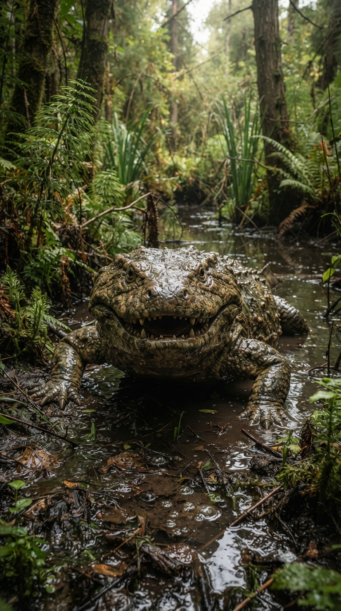
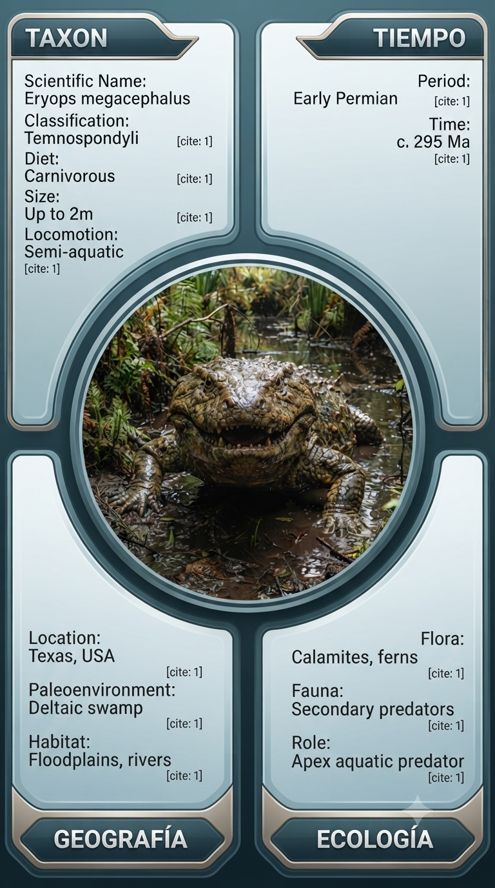

Paleoficha de PalEntropía


TAXÓN:
Eryops megacephalus
CLADO:
Temnospondyli (Amphibia)
DIETA:
Carnívoro / Piscívoro (depredador oportunista con mandíbula potente y dientes laberintodontes)
TAMAÑO:
Entre 1,5 y 2 metros de longitud.
LOCOMOCIÓN:
Semiacuática; extremidades robustas capaces de sostener el cuerpo en tierra firme, aunque más eficiente en el agua.
TIEMPO:
Pérmico Inferior (Cisuraliense), aproximadamente hace 295–272 millones de años.
GEOGRAFÍA:
Norteamérica (Euramérica).
EQUIVALENCIA PALEOGEOGRÁFICA:
Grandes cuencas fluviales tropicales de baja latitud.
AMBIENTE PALEAOECOLÓGICO:
Ríos, lagunas y pantanos estacionales donde la fauna se concentraba durante los periodos secos.
ECOLOGÍA:
• Flora: Bosques pantanosos de licópsidas, pteridospermas y vegetación ribereña.
• Fauna secundaria: Sinápsidos basales, anfibios menores y abundantes peces paleozoicos.
• Nichos: Depredador dominante de ríos y lagunas. Su enorme cráneo y poderosa dentición le permitían capturar peces acorazados y pequeños tetrápodos que se acercaban al agua.
• Relaciones: Desempeñaba un papel ecológico comparable al de los cocodrilos actuales, actuando como principal depredador en los ecosistemas continentales del Pérmico temprano.
CLIMA:
Wm16 (Tropical estacional). Clima cálido y húmedo con marcadas fluctuaciones hidrológicas que condicionaban la distribución de la fauna.
ESTADO ECOLÓGICO:
Estable. Eryops representa uno de los anfibios temnospóndilos más exitosos y mejor adaptados del Pérmico temprano, combinando una locomoción terrestre eficaz con una extraordinaria capacidad depredadora en ambientes acuáticos.